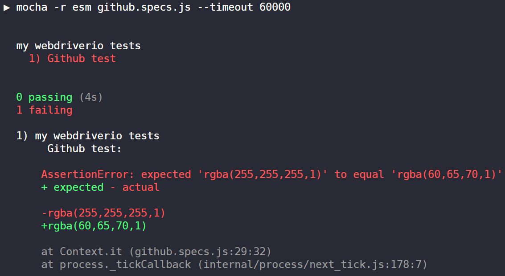
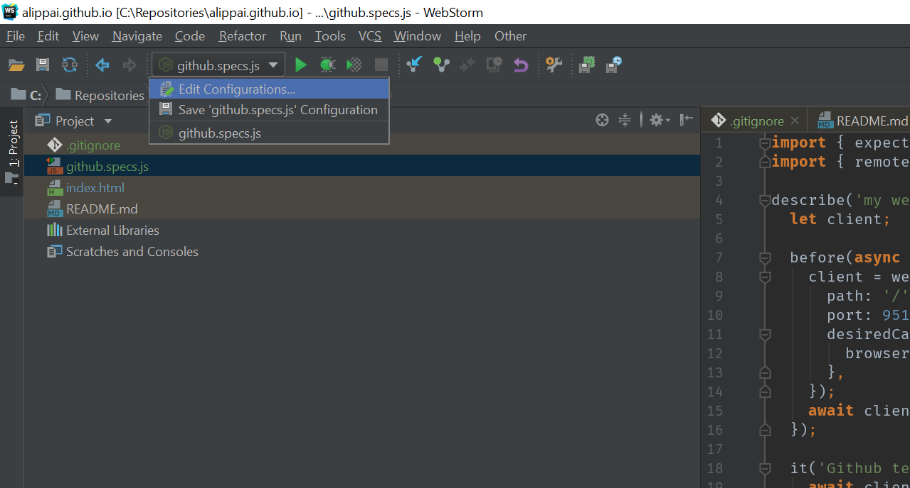
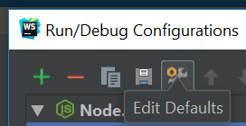
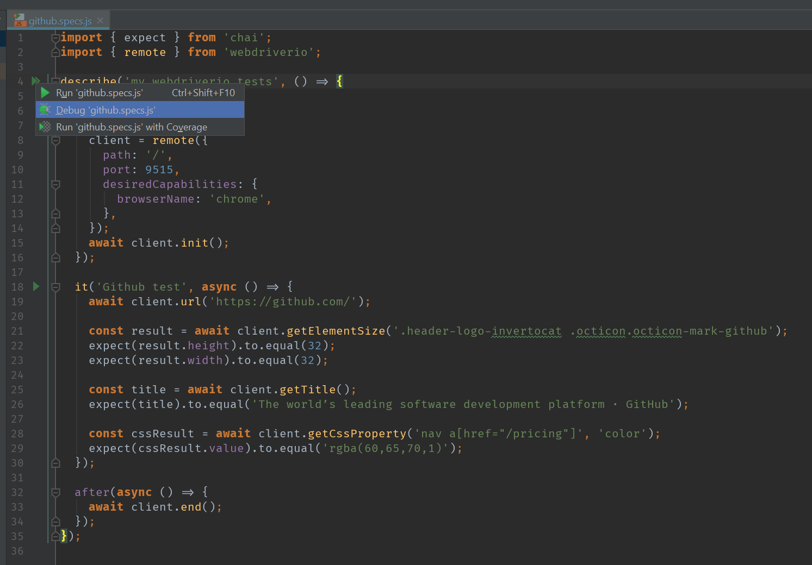
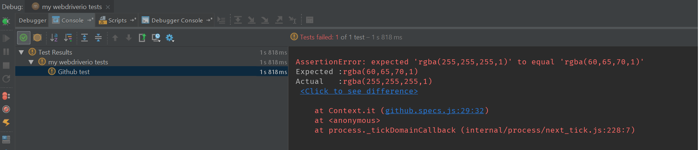
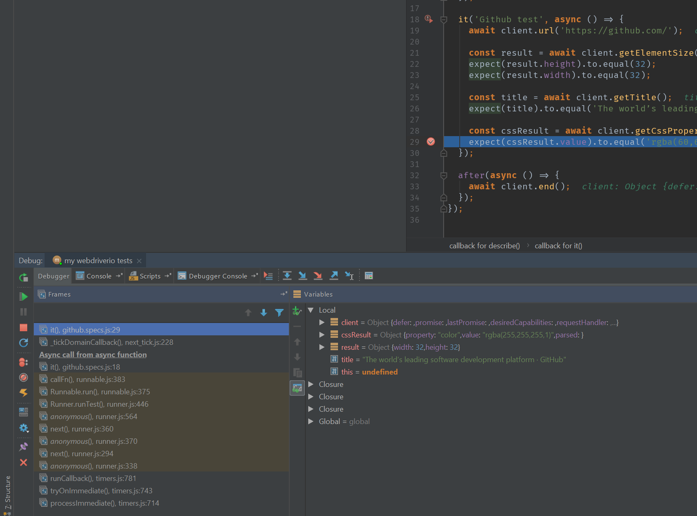
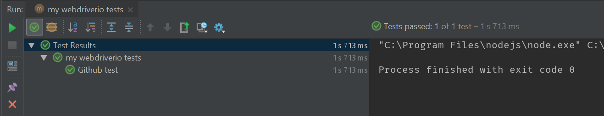

Running webdriver.io tests from WebStorm
 Webdriver.io is a nice framework, we – at Tresorit – use it heavily every day (like others).
Webdriver.io is a nice framework, we – at Tresorit – use it heavily every day (like others).
It comes with a custom test runner wdio and configuration scaffolding tool, which makes it easy to get started.
While it has super useful features like multiple test result reporters, concurrent spec running, Selenium and BrowserStack
integration, it doesn't make it easy to use it from WebStorm in a friendly way.
However they state:
WebdriverIO was designed to be as flexible and framework agnostic as possible.
It can be applied in any context and serves not only the purpose of testing.
which appears to be true
Usually we default to Mocha tests and the ChromeDriver server. Mocha is supported by
WebStorm, but wdio is not. To make them play happy together:
1. Install chromedriver
The fastest way is through npm:npm i -g chromedriverchromedriver executable available on your path. Start it by running chromedriver, it should
print something like this:
Starting ChromeDriver 2.38.552522 (437e6fbedfa8762dec75e2c5b3ddb86763dc9dcb) on port 9515
Only local connections are allowed.2. Add dependencies
webdriver.io for accessing the chromedriver:
npm i webdriverio --save-dev
esm for better import syntax:
npm i esm --save-dev
chai for assertions:
npm i chai --save-devGlobal Mocha is required to run the tests from the CLI
npm i -g mochaProject specific Mocha is required to run the tests from WebStorm
npm i mocha --save-dev3. Create an .esmrc file
This is required for using theimport ... from syntax of node modules.
{
"mode": "auto",
"cjs": {
"namedExports": true,
"vars": true
}
}4. Create the test file
Theasync/await makes the code easy to read, there is no need for node-fibers and other magic the wdio-sync
package injects when used with the default wdio-mocha-framework plugin and wdio runner. Keeping things low-level makes it possible to use the WebStorm's debugger easily.
import { expect } from 'chai';
import { remote } from 'webdriverio';
describe('my webdriverio tests', () => {
let client;
before(async () => {
client = remote({
path: '/',
port: 9515,
desiredCapabilities: {
browserName: 'chrome',
},
});
await client.init();
});
it('Github test', async () => {
await client.url('https://github.com/');
const result = await client.getElementSize('.header-logo-invertocat .octicon.octicon-mark-github');
expect(result.height).to.equal(32);
expect(result.width).to.equal(32);
const title = await client.getTitle();
expect(title).to.equal('The world’s leading software development platform · GitHub');
const cssResult = await client.getCssProperty('nav a[href="/pricing"]', 'color');
expect(cssResult.value).to.equal('rgba(60,65,70,1)');
});
after(async () => {
await client.end();
});
});mocha -r esm github.specs.js --timeout 60000
5. Open the WebStorm, set up Mocha and fix the test

(You can find it also in Run > Edit Configurations)

Click on Edit Defaults and add
-r esm --timeout 60000If your project has a package.json and mocha is installed, you should see green arrows next to the
describe() rows.
Click on it and select Debug
You will get the very same error you've got in the command line:

You can debug it within Webstorm, just add a breakpoint and hit 'Debug' again:

Now just fix the expectation (to
rgba(255,255,255,1)) and you are done, congrats!